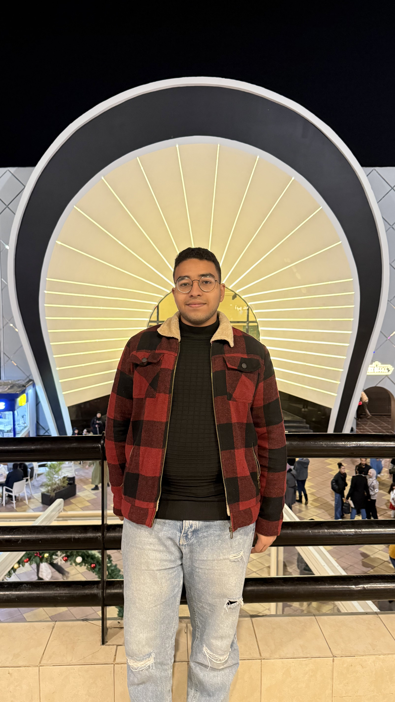

Hello, I'm
Abdelfattah Ahmed
I help organizations safeguard critical assets, build resilient data architectures, and ensure uninterrupted business continuity through proactive threat hunting and scalable data pipelines.
Explore My Journey
Professional Experience
Data Engineering Intern
Focused on enterprise data warehouse architectures and big data workflows. Designed analytical schemas, handled large-scale datasets, and implemented optimized transformation pipelines for high-volume data storage and query retrieval.
Cybersecurity Intern
Trained in proactive threat hunting, Security Operations Center (SOC) workflows, and web application security auditing based on OWASP Top 10 vulnerabilities. Investigated alert telemetry, analyzed attack vectors, and practiced incident handling.
Data Engineering Intern
Built and optimized end-to-end data pipelines, covering data extraction, cleaning, transformation (ETL), and data warehouse modeling. Applied modern data tools to ensure structured data delivery for analytics and reporting tasks.
Networking Intern
Gained hands-on experience in enterprise-grade infrastructure by assisting with Cisco switch configuration, fiber optic links, hardware troubleshooting, and monitoring. Supported the IT team in maintaining high-availability port communications.
AI & Analytics Intern
Explored practical applications of machine learning and data analytics to optimize port operations. Worked on data preprocessing, model evaluation, and exploring automated predictive workflows for logistics.
Cybersecurity Mentor
Mentored aspiring engineers in core information security principles, threat analysis, and secure network practices. Designed and delivered technical workshops, guiding participants through practical hands-on labs.
Featured Projects

Sales Data Warehouse & Pipeline
Fragmented transactional data and delayed operational reporting often hinder timely retail decision-making. To solve this, I designed and deployed an end-to-end automated analytics pipeline. I engineered Python scripts to clean and stage raw transactions, structured a dedicated SQL Server Data Warehouse with dimensional modeling, and built a lightweight Flask interface for interactive reporting.
View Project on GitHub
Telecom Data Warehouse ETL
Telecommunications networks generate massive, complex Call Detail Records (CDRs) that degrade reporting systems when left unoptimized. I architected an enterprise ETL workflow using SQL Server Integration Services (SSIS) to extract and transform high-volume logs into a Star Schema data warehouse, optimizing SQL indexing for rapid analytics and granular usage analysis.
View Project on GitHub
University Network Architecture
Campus environments with flat network topologies face severe broadcast overhead and security risks. Tasked with designing a resilient enterprise network, I engineered a multi-building architecture segmenting traffic via custom VLANs, subnets, and Inter-VLAN routing. I implemented redundant DHCP/DNS services and enforced Extended ACLs at gateway interfaces.
View Project on GitHub
Supermarket Data Cleaning Pipeline
Noisy raw supermarket records containing skewed outliers, corrupted timestamps, and high null ratios made reliable forecasting unfeasible. To streamline ingest pipelines, I created a modular Python preprocessing framework leveraging Pandas and NumPy. The pipeline automates schema validation, statistical imputation, and date normalization.
View Project on GitHub
Naukrigulf Dynamic Job Scraper
Extracting regional tech recruitment patterns manually from heavily dynamic, JavaScript-rendered job portals proved inefficient. I engineered a resilient web scraping pipeline using Selenium with customized explicit waits, custom user-agent headers, and error-handling strategies to structure outputs into clean tabular schemas.
View Project on GitHubWhat I Deliver
ETL & Data Warehouse Architecture
Designing robust enterprise data models (Star / Snowflake schemas) and building automated ETL pipelines in SSIS and SQL Server to convert scattered operational data into centralized, analytics-ready warehouses.
- Dimensional Modeling & SCD Management
- SQL Query & Storage Optimization
- High-throughput Call & Sales Record Processing
Data Pipelines & Automated Scraping
Developing resilient web scrapers with Selenium to harvest dynamic web data at scale, paired with Python (Pandas/NumPy) preprocessing pipelines that clean, validate, and structure noisy inputs automatically.
- Anti-bot & Dynamic JavaScript Scraping
- Automated Imputation & Outlier Filtration
- BI & Data Ingestion Ready Schemas
Enterprise Network Architecture
Architecting secure, segmented campus topologies. Configuring Cisco routing and switching, VLAN segmentation, Inter-VLAN routing, and traffic control to maximize throughput and eliminate network broadcast loops.
- VLAN Segmentation & Inter-VLAN Routing
- Subnet Planning & Core DHCP/DNS Integration
- Cisco Infrastructure Deployment & Hardening
Threat Defense & Security Operations
Protecting critical workloads via deep packet inspection and network boundary controls. Leveraging tools like Wireshark, Zeek, and Suricata for anomaly detection, coupled with strict ACL policies and incident response protocols.
- OWASP Top 10 Auditing & Remediation
- Deep Packet Analysis & Network Telemetry
- Blue Team Log Investigation & SOC Defense